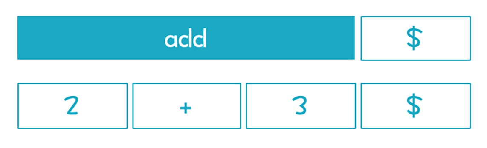
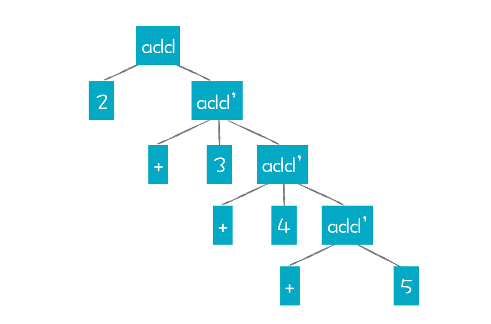
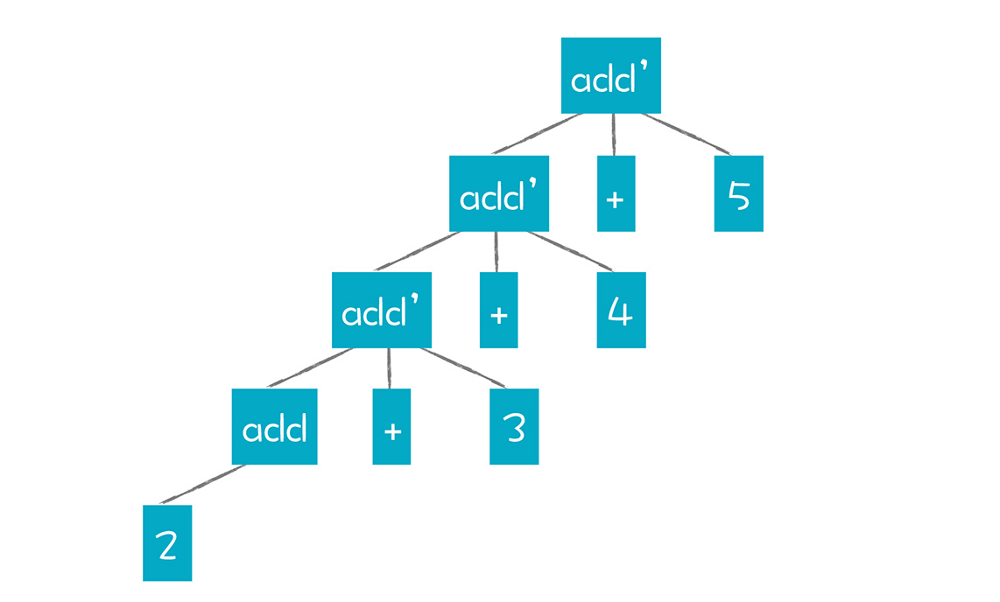

- 00 开篇词 为什么你要学习编译原理？.md.html
- 01 理解代码：编译器的前端技术.md.html
- 02 正则文法和有限自动机：纯手工打造词法分析器.md.html
- 03 语法分析（一）：纯手工打造公式计算器.md.html
- 04 语法分析（二）：解决二元表达式中的难点.md.html
- 05 语法分析（三）：实现一门简单的脚本语言.md.html
- 06 编译器前端工具（一）：用Antlr生成词法、语法分析器.md.html
- 07 编译器前端工具（二）：用Antlr重构脚本语言.md.html
- 08 作用域和生存期：实现块作用域和函数.md.html
- 09 面向对象：实现数据和方法的封装.md.html
- 10 闭包： 理解了原理，它就不反直觉了.md.html
- 11 语义分析（上）：如何建立一个完善的类型系统？.md.html
- 12 语义分析（下）：如何做上下文相关情况的处理？.md.html
- 13 继承和多态：面向对象运行期的动态特性.md.html
- 14 前端技术应用（一）：如何透明地支持数据库分库分表？.md.html
- 15 前端技术应用（二）：如何设计一个报表工具？.md.html
- 16 NFA和DFA：如何自己实现一个正则表达式工具？.md.html
- 17 First和Follow集合：用LL算法推演一个实例.md.html
- 18 移进和规约：用LR算法推演一个实例.md.html
- 19 案例总结与热点问题答疑：对于左递归的语法，为什么我的推导不是左递归的？.md.html
- 20 高效运行：编译器的后端技术.md.html
- 21 运行时机制：突破现象看本质，透过语法看运行时.md.html
- 22 生成汇编代码（一）：汇编语言其实不难学.md.html
- 23 生成汇编代码（二）：把脚本编译成可执行文件.md.html
- 24 中间代码：兼容不同的语言和硬件.md.html
- 25 后端技术的重用：LLVM不仅仅让你高效.md.html
- 26 生成IR：实现静态编译的语言.md.html
- 27 代码优化：为什么你的代码比他的更高效？.md.html
- 28 数据流分析：你写的程序，它更懂.md.html
- 29 目标代码的生成和优化（一）：如何适应各种硬件架构？.md.html
- 30 目标代码的生成和优化（二）：如何适应各种硬件架构？.md.html
- 31 内存计算：对海量数据做计算，到底可以有多快？.md.html
- 32 字节码生成：为什么Spring技术很强大？.md.html
- 33 垃圾收集：能否不停下整个世界？.md.html
- 34 运行时优化：即时编译的原理和作用.md.html
- 35 案例总结与热点问题答疑：后端部分真的比前端部分难吗？.md.html
- 36 当前技术的发展趋势以及其对编译技术的影响.md.html
- 37 云编程：云计算会如何改变编程模式？.md.html
- 38 元编程：一边写程序，一边写语言.md.html
- 加餐 汇编代码编程与栈帧管理.md.html
- 用户故事 因为热爱，所以坚持.md.html
- 第二季回归 这次，我们一起实战解析真实世界的编译器.md.html
- 结束语 用程序语言，推动这个世界的演化.md.html
- 捐赠
19 案例总结与热点问题答疑：对于左递归的语法，为什么我的推导不是左递归的？
目前为止，“编译原理”的前端部分已经讲完了，你学到现在，感受如何呢？
不得不说，订阅这门课程的同学，都是很有追求的。因为编译原理这门课，肯定给你的学习生涯多多少少地带来过“伤害”，你现在有勇气重拾“编译原理”，下决心将它攻克，本身就是一种有追求的表现。
在课程开始之初，很多同学当场立下（入）了Flag（坑），比如：
@andylo25：立下Flag，想写一个解释性语言。- @陈越 ：许诺会跟着学完。- @许。：强调自己因为面试华为来学习编译原理。- ……
还有同学认为自己半路出家，为了长远的发展，一定要补好基本功。要我说，乔布斯还是辍学加半路出家的呢，终生学习是互联网时代的常态：
@一只豪猪 ：半路出家的野路子码农来补课了。- ……
在准备课程的过程中，我努力把晦涩的知识点变得通俗易懂，希望得到你的认可。当我在留言区看到一些留言时，我的内心是欣慰的，也是欣喜的：
@许童童：之前看到词法分析什么的就是一脸蒙，看了老师的文章，醍醐灌顶。- @VVK：老师讲的太好了，十几年没搞懂的概念终于整理明白了。- ……
与此同时，我也在不断优化课程，力求将内容做到深入浅出，比如，在策划算法篇的内容时，我吸取一些同学的建议，尽可能画成可视化的图形，并且让整个算法的推导过程很直观地呈现。
但是我不能回避一个事实，就是即便这些内容你认为很好，但你要想学好编译原理，还是要花费不少精力将这些内容反复地看上几遍。你需要认真跟上课程的思路和进程，用心思考和实践，才会有所得，单看内容不动手尝试是没办法学为所用的。所以，在这里，我想表扬一些有耐心，愿意尝试的同学，比如@曾经瘦过@Unrestrained@周小明@Sam 当然，还有很多同学在一直坚持，我为你们点赞！
而且，我发现，很多同学还有探知和质疑精神，比如，@沉淀的梦想 发现我在示例代码里用的都是左值，也跟我讨论在实现闭包的时候，如何仍然正常访问全局变量。@mcuking 指出JavaScript的ES6版本已经支持块作用域 @李梁|东大 也与我讨论了关于C++ auto变量的类型推导等等。
我知道大部分同学的时间很紧，但我感谢你们的坚持，感谢你们在努力抽时间动手实践，比如@Smallfly 自己动手写规则；@曾经瘦过 再次动手跟着敲代码。
还有很多同学花了很多时间，用自己熟悉的语言，参照课程的示例代码重写了词法分析器、语法分析器，并分享了代码：
@（——_ ——)：写了一晚上，终于用C语言模仿实现了第二节课的内容。- @windpiaoxue：也做了一个C语言实现。- ……
其他有Go语言的（@catplanet）、Swift语言的（@Smallfly@Rockbean@贾献华）、C++语言的（@阿尔伯特@中年男子@蛋黄儿）、TypeScript的（@缺个豆饼吗@好吃的呆梨）、PHP的（@吴军旗）等等，我通常都会编译并运行一下。
@catplanet 甚至提供了一个界面，可以通过浏览器调用自己写的编译程序，运行并显示结果。
@京京beaver 还分享了在Windows环境下如何做Antlr的配置，让其他同学可以更顺畅地运行Antlr。
@knull 建议我在写BNF的时候，用到+号Token要带上引号，避免跟原来BNF表示重复1到多次的+号冲突。
@kaixiao7 提醒我在Windows下，EOF是用Ctl+z输入。
我对你们取得的成果以及建议感到由衷的高兴和感谢，我相信，你们的分享也激励了其他同学克服困难，继续前进！
当然了，你在学习的过程中，还会遇到一些问题，我很感谢提问题的同学。其中一些问题，我认为是比较典型，有通用意义的，所以选了4个典型的问题，再带你详细地探究一下。
问题一：对于左递归的语法，为什么我的推导不是左递归的？
这个问题本身反映了，进行递归下降分析的时候，如何保持清晰的思路，值得讲一讲。
在03讲，我们刚开始接触到语法分析，也刚开始接触递归下降算法。这时，我介绍了左递归的概念，但你可能在实际推导的过程中，觉得不是左递归，比如用下面这个语法，来推导“2+3”这个简单的表达式：
//简化的左递归文法
add->Int
add->add + Int
你可能会拿第一个产生式做推导：
add->2- 成功返回
因为没有采用第二条产生式，所以不会触发递归调用。但这里的问题是，“2+3”是一个加法表达式，2也是一个合法的加法表达式，但仅仅解析出2是不行的，我们必须完整地解析出“2+3”来。
在17讲，我提到，任何自顶向下的算法，都是在一个大的图里找到一条搜索路径的过程。最后的结果，是经过多次推导，生成跟输入的Token串相同的结果，解析完毕以后，所有Token也耗光。

如果只匹配上2，那就证明这条搜索路径是错误的，我们必须尝试另一种可能性，也就是第二个产生式。
要找到正确的搜索路径，在递归下降算法或者LL算法时，我们都是采用“贪婪”策略，这个策略在16讲关于正则表达式时讲过。也就是要匹配尽量多的Token才可以。就算是换成右递归的文法，也不能采用第一个产生式。因为解析完Int以后，接下来的Token是+号，还可以尝试用第二个产生式，那我们就要启动贪婪策略，用第二个，而不是第一个。
//简化的右递归文法
add->Int
add->Int + add
以上是第一种情况。
不过有的同学说：“我运用第二个产生式也能匹配成功，根据‘add->add + int’这个产生式，先拿第一个add去匹配2，再去匹配+号和3不就行了吗？”
这是另一种引起困扰的情况，也是我在17讲必须说一下广度优先算法的一个原因。因为这位同学的推导过程，是典型的广度优先。add非终结符，先广度优先地拆成两条路径：第一条路径匹配不成功；第二条路径进一步进行广度优先的探索，于是成功解析：

但我们在17讲也说过了，广度优先算法的性能很低，在这个简单的例子中还看不出来，但如果是稍微复杂一点儿的语法和表达式，计算量就指数级上升。
问题二：二元表达式的结合性的实现。
@nil：最终通过循环来消除递归带来的二元预算符的结合性问题？能否直接在递归中消除结合性问题？
04讲的这个问题在递归下降算法中是个难点，反映了理论上的算法用于工程实践时，会遇到的具体问题和解决方案，所以也值得探讨。
因为递归下降算法是自顶向下、最左推导的。对于AST来说，父节点总是先于子节点来生成。因此，使用下面这个消除了左递归的加法文法来尝试解析“2+3+4+5”这个表达式：
add -> Int add'
add' -> + Int add' | ε
得到的AST应该是这样的：

这个AST会觉得有点儿怪，毕竟它把加法操作分成了add和add’这两种操作。针对add’这样一个节点，我们可以定义为把Int子节点和add’子节点做加法，但这样就一共要做四次计算，1个add计算，3个add’计算。并且，因为是右递归，所以计算顺序是右结合的。
如果我们想改成左结合，可以尝试改变之前的约定，就是父节点先于子节点生成，把AST强行拧成这个样子：

可以看出，这样强拧的过程，已经违背了add和add’产生式的规则。
同时，用add和add’这两个节点才能表达加法运算，还是跟我们日常的习惯相违背。与之相对的，Antlr的写法，就很符合我们日常习惯。它是根据
add : Int
|<assoc=left> add + add
；
我们文稿中的示例算法，跟这个思路类似，也是不改变加法运算的含义，但会根据结合性改变AST节点的父子结构。这种改变，等价于我们在解析加法表达式时，不是用的最左推导，而是最右推导。
所以，我们可以看出：
单纯的运用递归下降算法或LL算法，我们是无法支持左结合的，一定要做一些特殊的处理。而LR算法就不需要这些特殊处理，仅仅通过文法的设计，就能支持好结合性，这可能是很多人推崇LR算法的原因吧。
另一方面，工程上运用良好的语法解析方法，不需要是纯粹的某一种单一的算法，增加一些辅助手段会让它更有效。比如Antlr的内部实现可以自动选择预读1个或更多个Token。必要的话还会启动回溯机制。这样做的好处，是对语法编写的要求降低，更加照顾程序员的工作效率。
问题三 ：二义性文法为什么也能正常解析？
@windpiaoxue：
stmt -> if expr stmt
| if expr stmt else stmt
| other
我测试了一下，Antlr使用上面这个规则可以正确地处理悬挂else的问题， Antlr在处理这种二义性问题的时候，是依据什么来处理的？
针对07讲中关于二义性文法的问题也有普遍意义，其实原因我在07讲里已经说了。我们实现一个算法的时候，是有确定的顺序来匹配的，所以，即使是二义性文法，在某种算法下也可以正常解析，也就是生成正确的AST。
如果我们采取深度优先的自顶向下的算法，在使用这两个产生式时：
stmt -> if expr stmt
stmt -> if expr stmt else stmt
我们就像问题一中讲加法运算时提到的那样，采用“贪婪”的算法，总是试图匹配更多的Token。所以，只要有else，它就会去匹配else，所以else总是会跟最近的if组成一对。但采用这个文法的时候，如果不是用贪婪策略来解析，就可能会导致if和else错配。
而严格的非二义性文法要求得比较高，它要求是算法无关的，也就是无论采用哪种推导顺序，形成的AST是一样的。 这里的关键点，在于把“文法”和“算法”这两件事区分开，文法是二义的，用某个具体算法却不一定是二义的。
问题四：“语法”和“文法”有什么区别和联系？
@鸠摩智：请问语法和文法有什么区别和联系？
这是一个术语的问题，确实要理清楚，你也可能会有这种疑问。
文法（Grammar），是形式语言（Formal Language）的一个术语。所以也有Formal Grammar这样的说法。这里的文法是定义清晰的规则，比如，我们的词法规则、语法规则和属性规则，都是用形式文法来定义的。
我们的课程里讲解了正则文法(Regular Grammar)、上下文无关文法(Context-free Grammar)等不同的文法规则，用来描述词法和语法。
语法分析中的语法（Syntax），主要是描述词是怎么组成句子的，一个语言的语法规则，通常指的是这个Syntax。
问题是，Grammar这个词，在中文很多应用场景中也叫做语法。这是会引起混淆的地方。我们在使用的时候要小心一点儿就行了。
比如，我做了一个规则文件，里面都是一些词法规则（Lexer Grammar），我会说，这是一个词法规则文件，或者词法文法文件。这个时候，把它说成是一个语法规则文件，就有点儿含义模糊。因为这里面并没有语法规则（Syntax Grammar）。
案例总结
在前端部分，我们伴随着文稿提供了丰富的示例程序，我相信代码是程序员之间沟通的最好手段。
第一批示例程序，是lab/craft目录下的。
通过手工实现简单的词法分析和语法分析，获得第一手的感受，破除对于编译技术的神秘感。你会感觉到，如果要实现公式计算器甚至一个简单脚本，似乎也没那么难。
第二批示例程序，是基于Antlr工具的。
使用这个工具，实现了两个目的：
- 第一，让你借鉴成熟的规则文件，高效实现词法分析和语法分析功能。
- 第二，在不必关注词法分析和语法分析的情况下，我们把更多的精力放在了语言特性设计、语义分析和运行期机制上。针对作用域、函数、闭包、面向对象等特性都提供了示例程序，最终实现出一门看上去挺威风的脚本语言。
第三批示例程序，则是完成了应用篇的两个题目。
一个示范了如何通过解析SQL语句，实现分布式数据库的一个简单特性。另一个演示了如何来实现一个报表系统。通过两个实际案例将技术跟应用领域做了很好的连接，启发你按照类似的思路，去解决自己领域的问题。
第四批示例程序，是在算法篇，针对编译器前端的三组核心算法提供了示例。
这些示例程序能够根据文法规则直接做词法分析和语法分析，不需要为每一组规则单独构造词法分析器和语法分析器，实际上相当于简化版本的Lex（词法分析）、Antlr（LL语法分析）和YACC（LR语法分析）。
我给你的学习设计了多次迭代、循环提升认知的路径，从简单原理、现有工具和最佳实践、领域应用、算法逻辑等多个维度，给你全面的感受。
小结
编译原理的前端技术部分，正式告一个段落。在这个过程中，我强调地是建立直觉，掌握关键知识点，以及跟实践结合，这三个方面是关键。在短短的十多节课中，我们已经覆盖了所有关键的知识点，吃透这部分课程，会对你的实际工作有所裨益。
当然，我也知道，不到两个月的时间，你肯定不可能完全把它完全吃透，不过，你已经在自己的知识体系中种下了一颗高质量种子，它会随着时间的流逝，伴随着你在实际应用中的体会，不断成长，并结出丰硕的果实！
如果你还有其他的问题，欢迎在留言区提问，我会逐一解答。最后，感谢你的阅读，如果这篇文章让你有所收获，也欢迎你将它分享给更多的朋友。
© 2019 - 2023 Liangliang Lee. Powered by gin and hexo-theme-book.